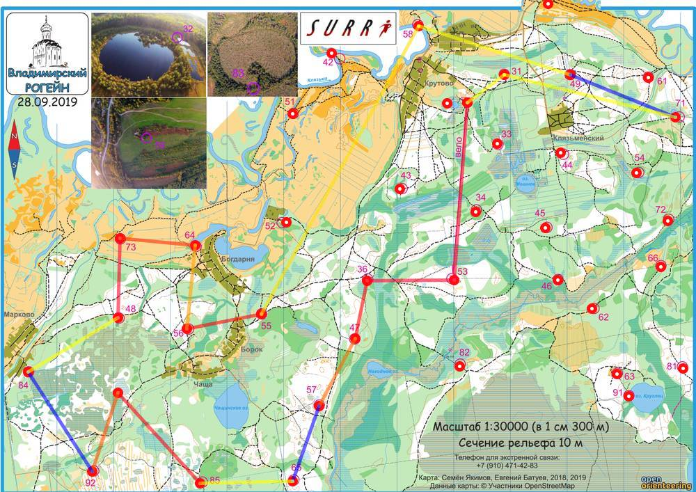

| Команда | О-ФРЯЗИНО1 |
| Номер | 29 |
| Участники | Костылев Вячеслав 1953 |
| Группа | мв |
| Место | 28 |
| Очки | 102 |
| Штраф | 3 |
| Время | 06:02:34 |
| Результат | 99 |
| КП | Время | Сплит | Расстояние, км | Темп, мин/км |
|---|---|---|---|---|
| С | 12:10:00 | |||
| 53 | 13:01:05 | 00:51:05 | 3.122 | 16.4 |
| 36 | 13:26:03 | 00:24:58 | 1.534 | 16.3 |
| 47 | 13:38:06 | 00:12:03 | 1.041 | 11.6 |
| 57 | 13:50:39 | 00:12:33 | 1.342 | 9.3 |
| 65 | 20:38:11 | 4590:47:32 | 1.399 | >999 |
| 85 | 14:21:11 | -4591:43:00 | 1.619 | <1 |
| 83 | 14:49:37 | 00:28:26 | 2.149 | 13.2 |
| 92 | 15:03:48 | 00:14:11 | 1.45 | 9.8 |
| 84 | 20:38:19 | 4589:34:31 | 2.068 | >999 |
| 48 | 15:41:39 | -4589:03:20 | 1.84 | <1 |
| 73 | 16:03:38 | 00:21:59 | 1.385 | 15.9 |
| 64 | 16:18:01 | 00:14:23 | 1.327 | 10.8 |
| 56 | 16:29:52 | 00:11:51 | 1.472 | 8.0 |
| 55 | 16:45:11 | 00:15:19 | 1.325 | 11.6 |
| 58 | 17:23:02 | 00:37:51 | 5.778 | 6.6 |
| 49 | 17:39:02 | 00:16:00 | 2.795 | 5.7 |
| 71 | 20:38:15 | 4586:59:13 | 1.997 | >999 |
| 31 | 18:08:29 | -4587:30:14 | 3.102 | <1 |
| Ф | 18:12:34 | 00:04:05 | 0.808 | 5.1 |
| 06:02:34 | 37.553 км | 11.7 мин/км |
